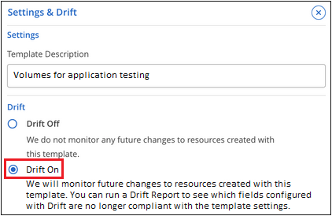
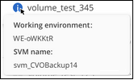

Inizia subito
Inizia subito
Verificare le risorse per la conformità dei modelli
 Suggerisci modifiche
Suggerisci modifiche
BlueXP può monitorare i valori dei parametri utilizzati quando una risorsa è stata creata con un modello utilizzando la funzione "drift". Drift identifica le risorse che sono state modificate e che non sono più conformi alle impostazioni del modello.
A questo punto, il drift identifica i parametri modificati in una risorsa — è necessario apportare manualmente le modifiche alla risorsa per riportarla alla conformità con il modello. In futuro saremo in grado di inviare notifiche quando una risorsa non è conforme o addirittura di invertire la modifica di un utente in modo che tutte le risorse create da un modello vengano riportate automaticamente alla conformità.
Come funziona la deriva
La deriva identifica i parametri non conformi come segue:
-
Quando si crea un modello, si attiva la funzione di spostamento per alcuni parametri che non si desidera vengano modificati dagli utenti. Ad esempio, potrebbe essere necessario creare copie Snapshot utilizzando la policy "Default" per tutti i volumi creati da un modello.

-
Attivare la funzione di spostamento per il modello, quindi salvarlo.

-
Gli amministratori dello storage eseguono il modello per creare volumi.
-
In seguito, un amministratore dello storage modifica un volume e disattiva le copie Snapshot.
-
Viene eseguito il drift check su tutti i modelli e il servizio di correzione BlueXP confronta l'impostazione del modello Snapshot Copies con l'impostazione corrente del volume. Tutti i valori non conformi vengono contrassegnati in modo da poter correggere l'impostazione errata.
Drift Dashboard
La Dashboard Dashboard Drift mostra il numero totale di risorse (ad esempio, volumi) create utilizzando i modelli, il numero ancora conforme al modello, il numero non conforme (drift) e il numero creato con Drift disattivato.
-
I controlli nella parte superiore di ciascuna colonna consentono di ordinare i risultati in ordine numerico o alfabetico.
-
Il
 Consente di filtrare i risultati in base al nome del modello, alla policy e allo stato di spostamento e al tipo di azione. Ad esempio:
Consente di filtrare i risultati in base al nome del modello, alla policy e allo stato di spostamento e al tipo di azione. Ad esempio: -
La barra di ricerca consente di cercare un nome di volume o modello specifico.
-
Per ulteriori informazioni sulla risorsa effettiva (o volume), ad esempio l'ambiente di lavoro e la VM di storage, fare clic su
 .
.
Compilare il Dashboard Drift
È necessario eseguire il controllo della deriva su un modello prima di inserire i valori nel Dashboard Drift.
È possibile eseguire il controllo deriva per tutti i modelli dalla dashboard modelli:
È possibile eseguire il controllo della deriva su un singolo modello dalla dashboard modelli:
Creare un report di deriva per le risorse non conformi
È possibile visualizzare un report di deriva per una singola risorsa o eseguire un report per scaricare un report per tutte le risorse. Utilizzando questo report è possibile assegnare azioni agli amministratori di sistema per apportare modifiche che ripristinino la conformità delle risorse con il modello.
È possibile fare clic sull'icona Drift di una risorsa nel Dashboard Drift per visualizzare un elenco dei parametri di ogni risorsa non conforme.

Per visualizzare un report di deriva per le risorse create dai modelli, fare clic su  Per scaricare un file .CSV. Il report di deriva riflette ciò che viene attualmente filtrato nella pagina e non mostra tutte le risorse a meno che non siano stati applicati filtri nella pagina.
Per scaricare un file .CSV. Il report di deriva riflette ciò che viene attualmente filtrato nella pagina e non mostra tutte le risorse a meno che non siano stati applicati filtri nella pagina.
Dettagli sullo stato di salute della replica BlueXP nel report di drift
Quando "Attivazione della replica BlueXP su un volume utilizzando modelli", È possibile scegliere di visualizzare informazioni di replica più dettagliate nel report drift attivando la funzione drift nel campo "Enable Replication Health monitoring" (attiva monitoraggio dello stato di salute della replica). Se attivato, il report di deriva mostra se la relazione di replica di BlueXP è sana o non sana (con deriva), oltre al tempo di ritardo di SnapMirror, allo stato e all'ultimo tempo di trasferimento.
Questa schermata mostra i dettagli della replica per una relazione SnapMirror non corretta nel report di deriva.
Nota: poiché la replica viene applicata inizialmente al volume, lo stato di salute viene restituito come "Falso", il che significa che non è integro. Dopo alcuni minuti viene visualizzato lo stato reale della replica.